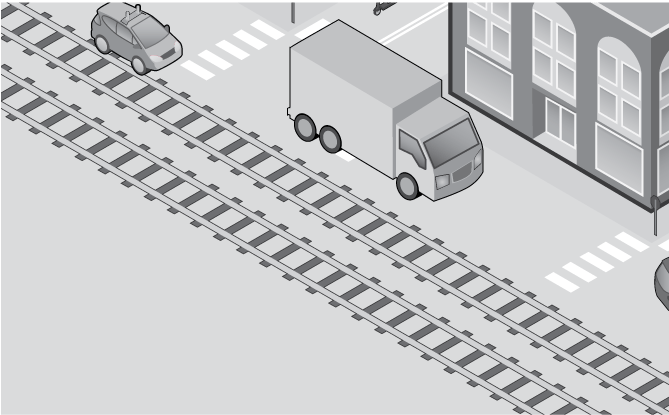
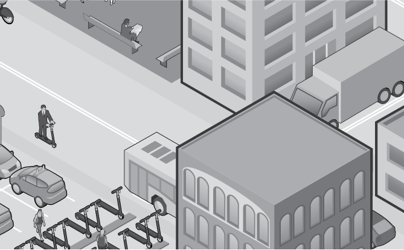
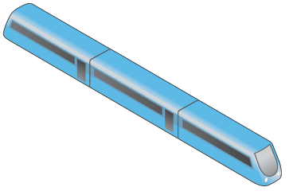
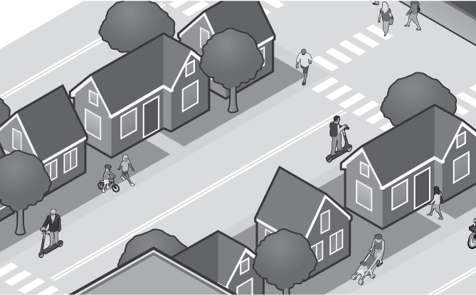
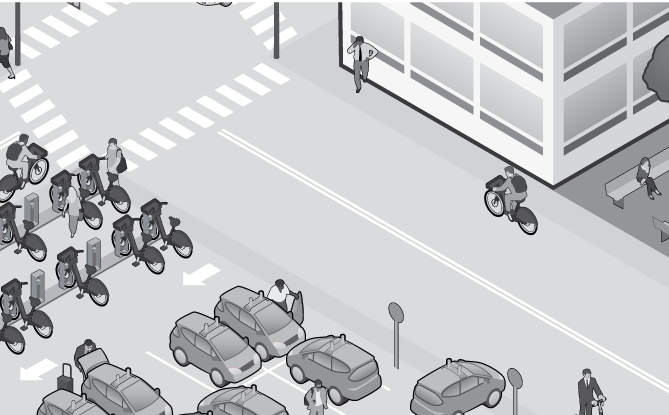
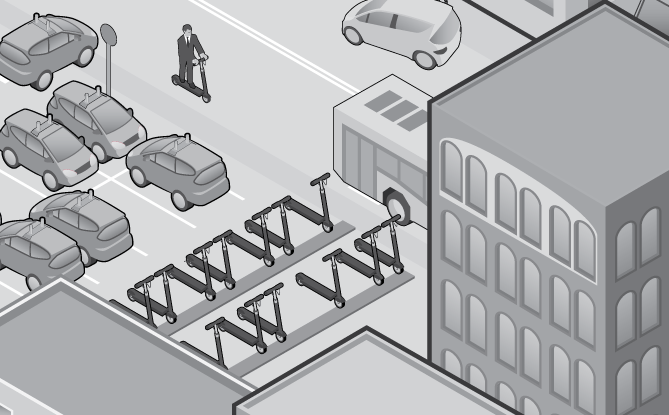
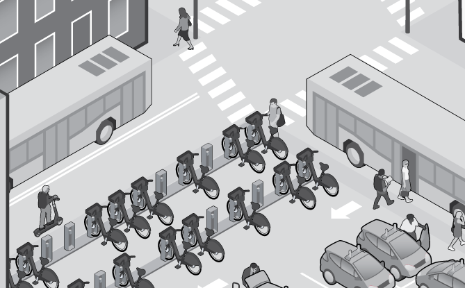

Sources

Trains
The Aon team wish to thank expert Jillian Syfield for her contributions.
Illustration by Vic Kulihin.
https://www.forbes.com/sites/forbestechcouncil/2018/11/06/how-maas-public-transit-is-changing-the-world/#270ce1de7518
https://www.wired.com/story/transit-center-census-americans-public-transportation/
https://www.citylab.com/transportation/2018/09/the-global-mass-transit-revolution/570883/
https://techcrunch.com/2019/01/24/whim-the-all-in-one-mobility-app-for-ride-sharing-public-transit-and-rentals-is-coming-to-the-us/

Click red circles to learn more about each type of transportation mode
From electric scooters to ride-hailing apps, technology is rapidly changing how we get around our cities. Learn more by clicking through the city below.
How Tech Is Reshaping Transportation


Trains
Benefits
Better accessibility: urban areas are easier to visit, boosting the economy
Large footprint: many different urban neighborhoods and suburbs are connected
Eco-friendly: trains produce lower carbon emissions
Considerations
Security concerns: accidents and crime are common across many mass transit systems
Inconsistent service: punctuality of trains can be unpredictable
Aging infrastructure: train systems have aged in certain areas
Self-driving Cars
As the adoption of self-driving cars grows, ride-sharing companies may start offering fully autonomous vehicles via their apps. Car manufacturers could also enter the ride-share space for self-driving cars, changing the way people own and use their cars.
Benefits
Accident reduction: increased sensors in vehicles can communicate with each other to improve driver and pedestrian safety
Improved traffic flow: increased connectivity
could lead to better route planning
Considerations
Liability concerns: there is uncertainty as to whether liability falls to the technology or the manufacturer
Inconsistent regulation: varies by country
Shaky safety: AV technology functions well in testing environments but road performance still unproven
Autonomous Buses
Along with other autonomous vehicles, self-driving buses employ technology including sensors, radar and cameras that allow them to drive, park and maneuver – all without a human driver.
Benefits
Decreased operating costs: autonomous buses don’t rely on drivers, resulting in significant cost reduction
Eco-friendly option: buses produce lower emissions than cars
Considerations
Nascent technology:
various tech errors could cause accidents
Security issues: no driver means less security on buses
Improved safety: potential to reduce road risks and accidents
Bike-sharing
In metropolitan areas around the world, riders can rent bikes through a mobile app, picking them up from, and returning them to, docking stations located throughout the cities and towns.
Benefits
Eco-friendly option: bikes produce zero carbon emissions
Increased access: bikes provide an easy and economical way to move around cities
Considerations
Inconsistent regulation: rider safety standards vary by country and even by city
Liability concerns: rider or third-party accidents have no clear answer on liability
Electric Scooters
Look along the sidewalk of any big town or city and you’re likely to spot a cluster of free-standing electric scooters. These scooters, which can travel up to 30 miles per hour, are playing a larger role in the urban transportation landscape, especially in addressing the “last mile” of transit.
Benefits
Increased accessibility: inexpensive and convenient renting makes public transit more accessible
Considerations
Accidents and injury coverage: typically not covered by standard auto, homeowners’ or renters’ policies
Rider and pedestrian safety: danger to pedestrians when ridden on sidewalks; no enforcement of rider safety standards
Cost efficiency: scooters are cheaper to fuel than cars and buses
Carbon footprint: associated with charging, maintenance and recycling of the lithium ion battery
https://www.forbes.com/sites/danielaraya/2019/01/29/the-challenges-with-regulating-self-driving-cars/#e572ab3b2602
https://theonebrief.com/the-fast-lane-what-driverless-cars-mean-for-innovation-and-risk/
https://www.nytimes.com/2019/07/17/business/self-driving-autonomous-cars.html
Self-driving Cars
https://www.forbes.com/sites/michaelgoldstein/2018/05/09/uber-and-lyft-the-cost-and-benefits-of-disruption/#5d412fc0dfcb
https://www.businessinsider.com/uber-ipo-company-warns-cyber-attacks-could-cripple-its-business-2019-4
https://theonebrief.com/the-fast-lane-what-driverless-cars-mean-for-innovation-and-risk/
Ride-sharing
https://www.cbsnews.com/news/electric-scooter-backlash-leads-to-new-laws-and-scooter-rage-july-2019/
https://www.wired.com/story/e-scooter-micromobility-infographics-cost-emissions/
https://riskandinsurance.com/insurers-approaching-electric-scooter-industry/
https://www.bbc.com/news/uk-48106617
https://www.illinoispolicy.org/lightfoot-moves-to-reform-infamous-chicago-workers-comp-program/
Electric Scooters
https://www.forbes.com/sites/forbestechcouncil/2018/11/06/how-maas-public-transit-is-changing-the-world/#270ce1de7518
https://www.cnbc.com/2019/03/20/uks-first-self-driving-bus-begins-trials.html
Autonomous Buses
Ride-sharing
Commuters are already hailing rides through any number of ride-sharing service platforms such as Uber or Lyft. Most ride-sharing companies currently rely on independent contractors to either drive their own cars or lease them from the company itself.
Benefits
Increased access: ride-hailing provides transport to more rural areas, especially to commuters not on public-transit routes and those with restricted ability to drive such as the elderly or disabled
Decreased cost:
ride-sharing services can be
less expensive than taking a taxi, for example, offering more transport options to riders across socioeconomic classes
Improved regulations: jurisdictions around the world have employed standard protections for riders
Considerations
Liability concerns: a variety of scenarios have no clear answer on liability
Cyber security issues: technology platforms could leave passenger and driver information vulnerable to cyber attacks
Decreased traffic congestion: greater driver pick-up and drop-off efficiency could lead to declines in road congestion
Required maintenance: general upkeep of bicycles, including disposal of broken or damaged bikes, is needed
General liability: few, if any, ridership laws restrict who can ride a scooter






Reset

In an attempt to stay relevant to customers, train companies are integrating their systems with transport-planning apps and ticket sites. Helsinki was one of the first cities to pilot mobility as a service (MaaS) with a centralized, subscription-based transit app where subscribers can plan, reserve and pay for their trips on the city’s trains as well as shared bikes, cars and scooters.